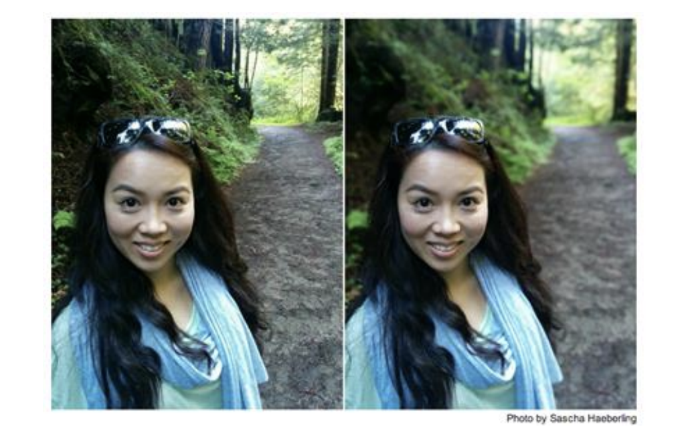

We want to simulate depth of field effects in photos that do not have shallow depth of field. We will do this
by producing a depth map using the already existing depth of field in the image via a defocus map. Given a
depth of field and pixel information we can then simulate a thin lens with variable aperture and focal plane.
|
Bokeh refers to the blur in the out of focus parts created by the aperture of the lens.
|
Problem Statement
Bokeh is a often a desired effect in portrait photography. The out of focus blur of the background
gives the subject more "pop" and presence. The shallow depth of field necessary
to produce this effect is created by large sensors and large apertures found
in professional cameras. However, smartphone cameras have small sensors which prevent them from producing the
aesthetic depth of field effects that big sensor DSLRs can produce. However, modern
smartphones often have “portrait mode”, which simulates this shallow depth of field.
We will attempt to produce bokeh by first producing a depth map using a “defocus map”, applying a gaussian
filter on the image and using the image gradient as a stand in for depth. Then
using our depth map we will apply a thin lens simulation to render the final
bokeh laden photo.
|

Deep vs Shallow Depth of Field. Photo taken from Resource 2.
|
Goals
Use Depth Estimation from single/multiple images to generate synthetic depth of field effects, like bokeh effect and 3d ken burns effect
-
Segmentation
-
Effects
-
Bokeh Effect - enhance the blur of the background to make the foreground pop more
-
Portrait Mode - artificially decrease the focal length of the image to change what is the background
-
3D ken burns - ‘enhanced zoom’ where parallax effects are used to make the zoom look like the camera is moving towards the image instead of zooming in.
http://content.sniklaus.com/kenburns/video.mp4
Stretch Goals
- OpenGL acceleration for depth mapping
- Compare depth map based approaches to Inverse Rendering Based Approaches; foreground segmentation
- Use focus stacking to create depth map
Ouput/Deliverables
- Produce images with bokeh from images without shallow depth of field
- Produce a 3D depth map of a photo
Quality
We will collect a photoset of photos taken of the same scene with varying apertures on a real 35mm camera,
and compare it visually to photos produced with our depth of field synthesizer.
We will measure render time taken for each of the effects, and time / visual quality trade offs in the image.
Schedule
- 2nd Week - Finish creating depth map and compute brokeh effect
- 3rd Week - Apply portrait and ken burns effect. Work on stretch goals
- 4th Week - Finish write up
Resources
- http://graphics.stanford.edu/papers/portrait/wadhwa-portrait-sig18.pdf - Google portrait mode paper
- https://pdfs.semanticscholar.org/0cda/570098837cc1accb7b871611b88c48b8f38c.pdf - Defocus Map
- https://arxiv.org/pdf/1909.05483v1.pdf - 3d ken burns
- https://arxiv.org/pdf/1810.08100.pdf - depth of field from single image